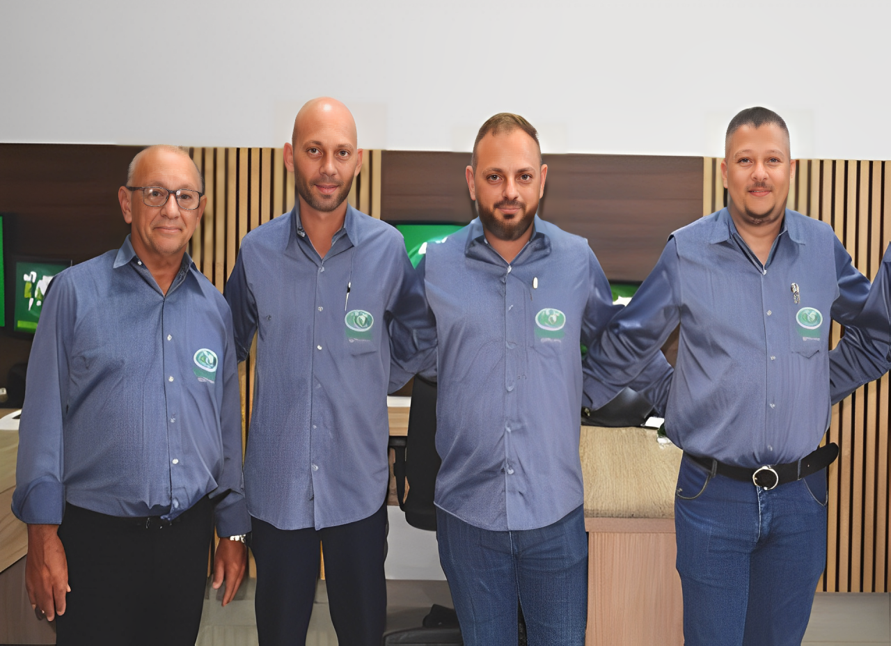

Topografia e Agrimensura, Regularização Fundiária, Georreferenciamento de imóveis rurais, Pericias e Mais!
Atendendo com agilidade e qualidade, a Ranuci Topografia oferece soluções sob medida para todas as necessidades de topografia e agrimensura. Com uma equipe de profissionais altamente qualificados e equipamentos de última geração, a empresa é referência no mercado.
Solicite um orçamento no Whatsapp
Quem somos
Um pouco sobre nos
A Ranuci Topografia foi fundada por Natalino Ranuci da Silva, técnico em agrimensura formado em 1974. Após atuar no setor público em Presidente Venceslau, começou a realizar trabalhos topográficos paralelamente. Em 2001, decidiu formalizar a empresa, priorizando a satisfação dos clientes. Em 2012, seu filho Fernando Ranuci tornou-se sócio, consolidando a atuação familiar no negócio.

Com mais de 20 anos em Presidente Venceslau, a Ranuci é uma empresa especializada em topografia, cartografia, geodésia, consultoria, georreferenciamento, CAR (Cadastro Ambiental Rural), SARE (Sistema de Informação de Acompanhamento a Regularização Ecológica), acompanhamentos técnicos, laudos vistoriais, aerolevantamento, cálculos de volumes, retificações, desmembramentos, rurais e urbanos.